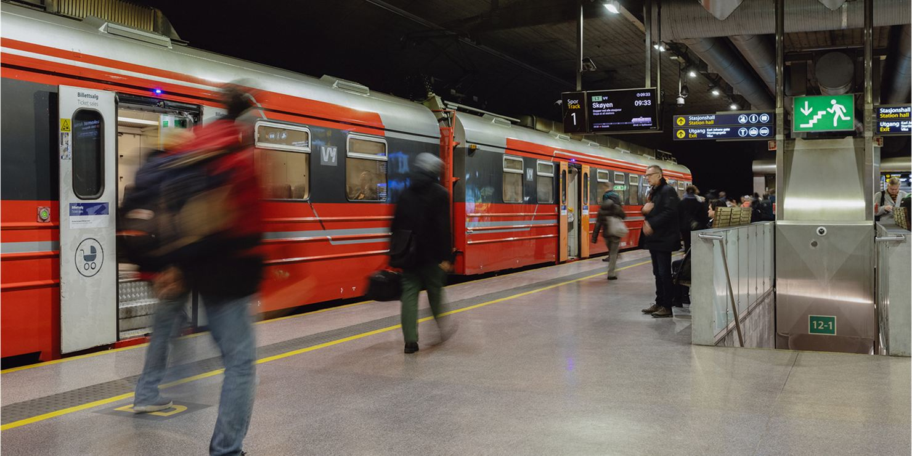
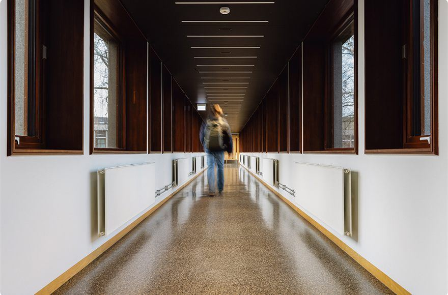
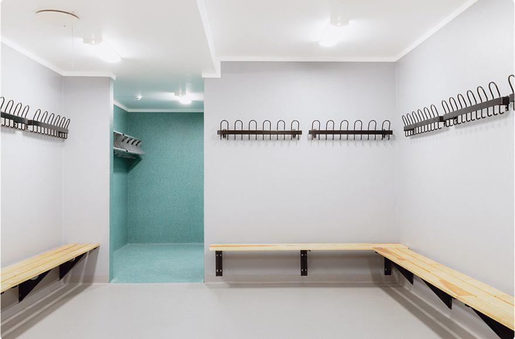
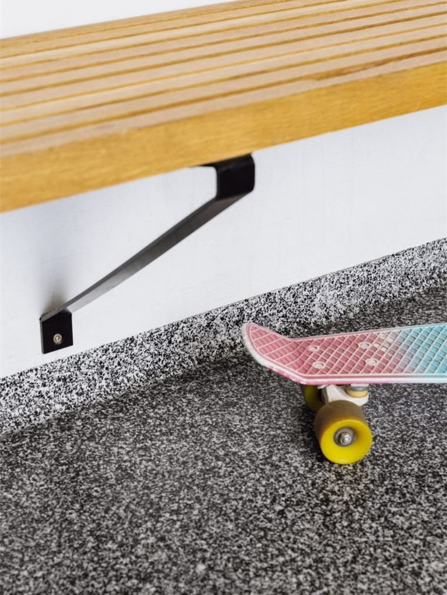
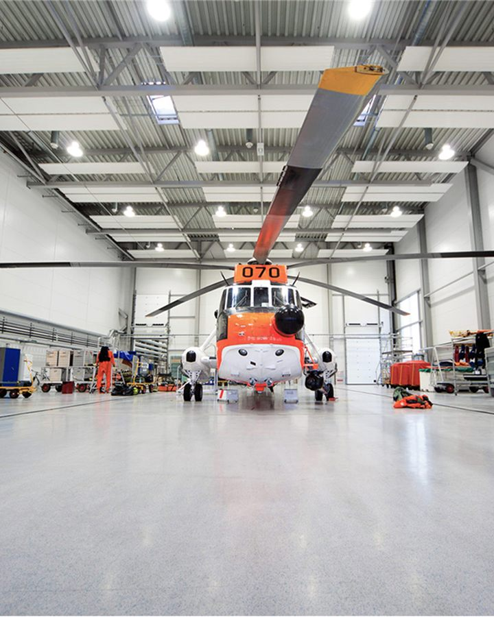

Acrylicon Industry System
Mørtelsystem som påføres med murskje, for offshore og tungindustri.
- Tykkelse
- 4 mm
- Egenskap
- Utmerket trykkstyrke og strekkfasthet
Fire kontorer: Sande, Trondheim, Bodø og Aksdal.

Akrylbaserte systemer · snart 50 år i Norge
Acrylicon rådgir og installerer sømløse gulv- og veggsystemer for industri, næringsmiddel, helse og offentlige bygg. Fire kontorer, fra Aksdal i sør til Bodø i nord.
Systemvelger
Acrylicon har tolv produktsystemer, og beskrivelsene deres er presise nok til å velge mellom dem. Svar på flate, miljø og hva som er viktigst — så setter vi sammen forslaget for deg.
Produktsystemer
AcryliCon leverer langvarige løsninger, med enkelt og tidsbesparende vedlikehold, som tilfredsstiller bedriftens hygienestandard.
Mørtelsystem som påføres med murskje, for offshore og tungindustri.
Ekstrem slitestyrke, laget for våtormråder og tungindustri.
Selvutjevnende og fleksibelt, for tungindustri og rene miljøer.
Butikk, lager og lett industri — områder med mye fottrafikk.
Dekorativ overflate for tung fottrafikk og moderat industri.
Dekorativ overflate i en rekke farger, for garderober, helse og matindustri.
Bruksområder
Enten det handler om hygiene, slitestyrke, sikkerhet eller estetikk, leverer våre løsninger på alle fronter.



Referanser
Åtte av referanseprosjektene fra Acrylicons egne sider — skoler, idrettsbygg, togstasjon, fiskeindustri og offshore.
Om Acrylicon
En akrylbasert overflatebehandling spesialutviklet for gulv og vegger med høye krav til holdbarhet, ytelse og hygiene.

«Våre produkter er 100 % fri for giftstoffer og har lav miljøpåvirkning – en bærekraftig løsning som ikke går på bekostning av kvaliteten.»
Kontorer
Hvert kontor dekker sin del av landet. Sande-kontoret har ansvaret for Sørøstlandet og er det eneste med adresse og telefon oppgitt her.
Base i Sande i Vestfold. Betjener alt fra dagligvarebutikker og sykehus til industribedrifter og svømmehaller, i Viken, Innlandet, Vestfold, Telemark, deler av Agder og Oslo.
Førstevalget for kvalitetsgulv i Midt- og Vest-Norge siden 1994, med bedrifter og offentlige institusjoner i Trøndelag, Møre og Romsdal og på Vestlandet.
Fra base i Bodø dekkes Nordland, Troms, Finnmark og Svalbard — regionens største leverandør av akrylbaserte industrigulv, ifølge Acrylicon selv.
Lokaler i Aksdal, og prosjekter i Rogaland, Vestland, Agder og på norsk sokkel — både små og store, på land og offshore.
Sande-kontoret
Navn, roller og kontaktopplysninger er hentet fra Acrylicons egen kontorside.
Daglig leder
Salgsteknisk leder
HMS-ansvarlig
Kontakt
Beskriv flaten og miljøet den står i. Forespørselen går til kontoret som dekker ditt område, og du får en kvittering med det samme.
Acrylicon Industrigulv AS
Prestegårdsjordet 1
3070 Sande
987 777 095
Felt merket med * er påkrevd. I denne visningen blir forespørselen stående i nettleseren — ingenting sendes.
Slik ser henvendelsen ut når den når kontoret.
Kvitteringen ligger bare i denne nettleseren. Send den videre som e-post, eller fyll ut på nytt.